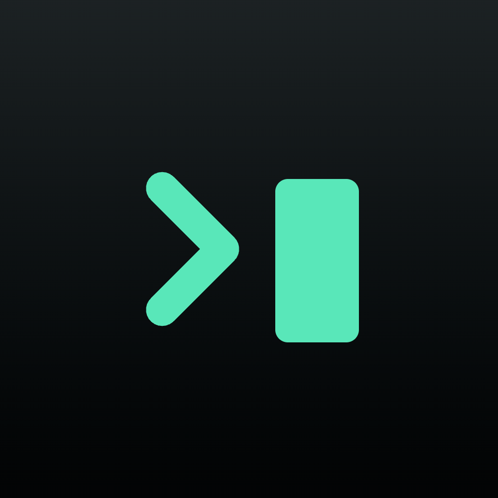

Hushterm_
계정 없이 쓰는 iPhone · iPad용 SSH 클라이언트. 기기 내 AI, 위험 명령 경고.
An SSH client for iPhone and iPad that needs no account. On-device AI and risky-command warnings.

계정 없이 쓰는 iPhone · iPad용 SSH 클라이언트. 기기 내 AI, 위험 명령 경고.
An SSH client for iPhone and iPad that needs no account. On-device AI and risky-command warnings.